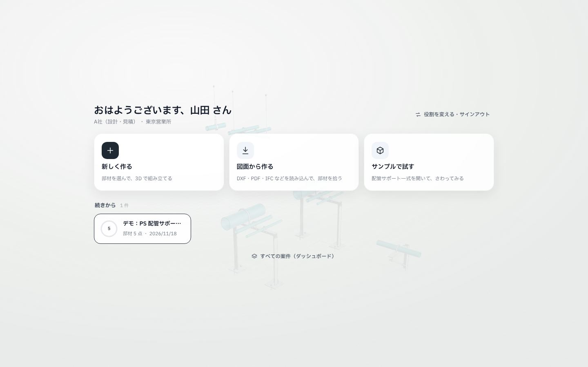
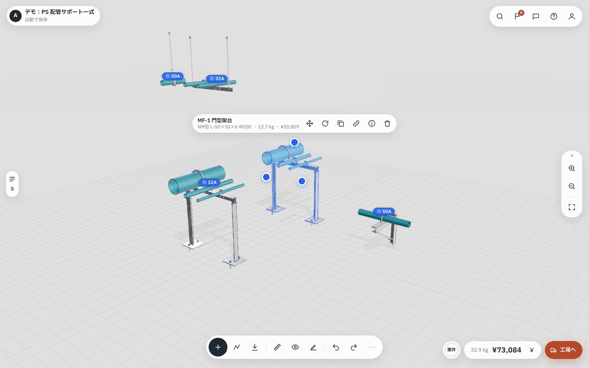
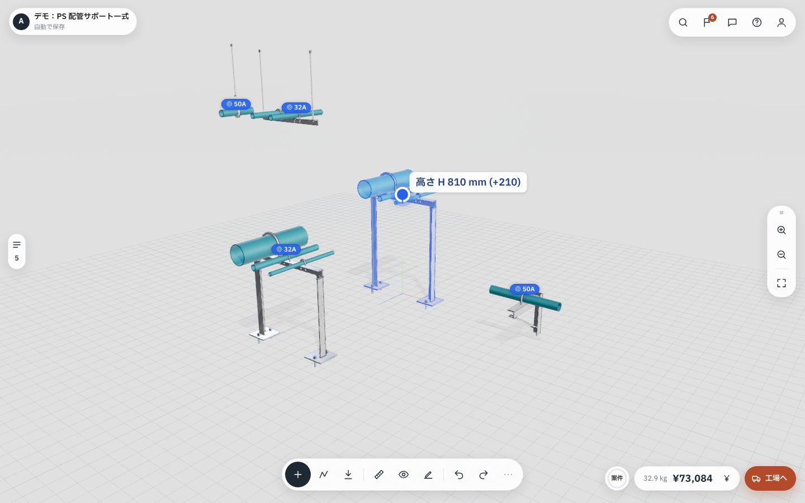
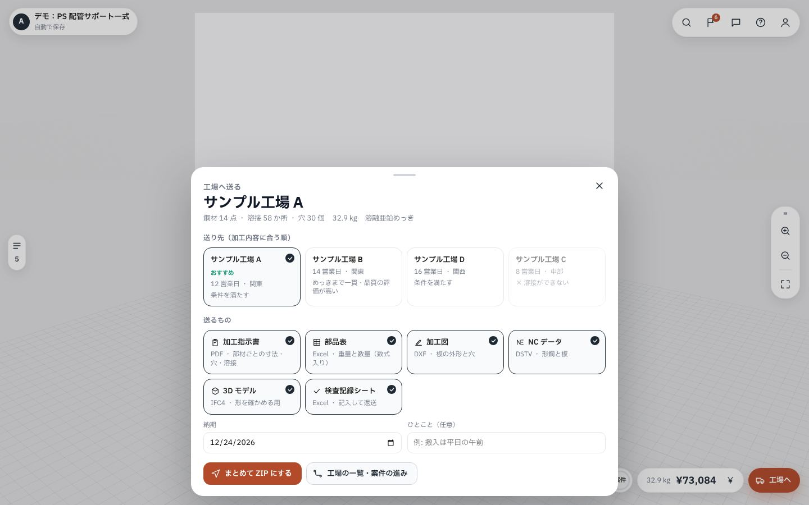

1
2
3
4
5
6
7
v3 は、画面いっぱいの 3D に、必要なときだけ道具が出る画面です。部材の青い点をつまんで寸法を変え、見積と工場への送付は 1 枚の札で済ませます。







| キー・操作 | すること |
|---|---|
| B | 部材を足す |
| E | 見積 |
| T | 工場へ |
| L / P | 部材の一覧 / 詳しい値 |
| V | 見え方 |
| + / − / 0 | 寄る / 引く / 全体 |
| Ctrl + K | やりたいことを探す |
| Ctrl + Z / Ctrl + Y | 元に戻す / やり直す |
| Shift（つまみながら） | 1 mm 刻み |
| Esc | 札を閉じる |
| こんなとき | こうしてください |
|---|---|
| 画面が開かない・3D が出ない | Chrome か Edge の最近の版で開いてください。Web 版はインターネットにつながっている必要があります（3D の部品を読み込むため）。つながらない場所では、オフライン版（ANGLEX_v1_offline.html など）を使ってください。 |
| 作ったデータはどこに保存される？ | お使いのブラウザの中に自動で保存されます。別の PC やブラウザには引き継がれません。持ち運ぶときは、案件を書き出して（プロジェクト JSON）、相手の画面で読み込みます。 |
| 動きが重い | 見え方を軽くしてください（v1・v2 は「高品質」と「影」を切る、v3 は「見え方」で「形を見やすく」）。部材が多いときは、断面ボックスや分解で見る範囲をしぼると軽くなります。 |
| 間違えて消した・変えた | 「元に戻す」（Ctrl + Z）で 1 つずつ戻せます。「やり直す」は Ctrl + Y です。 |
| 金額や納期は正しい？ | 重量・金額・納期は参考値です。単価・工場・標準日数はサンプルの値で、導入先の値に置き換える前提です。 |
| どの画面を使えばいい？ | はじめての方は v3（画面が静かで、触って直せる）。図面から順に進めたい方は v2（5 つの手順）。すべての機能を一画面で使いたい方は v1（リボン型）。3 つとも同じデータを扱い、いつでも切り替えられます。 |